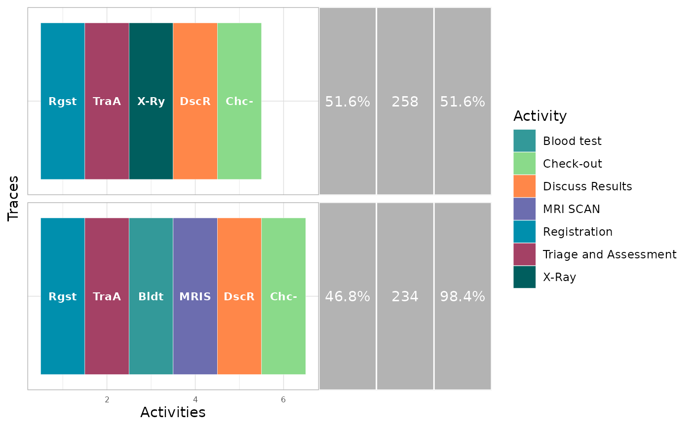

Different activity sequences in the log can be visualized with trace_explorer(). With the type argument,
it can be used to explore frequent as well as infrequent traces. The coverage argument specificies how much of the
log you want to explore. By default it is set at 0.2, meaning that it will show the most (in)frequency traces
covering 20% of the log.
Usage
trace_explorer(
log,
coverage = NULL,
n_traces = NULL,
type = c("frequent", "infrequent"),
coverage_labels = c("relative", "absolute", "cumulative"),
abbreviate = TRUE,
show_labels = TRUE,
label_size = 3,
scale_fill = bupaR::scale_fill_discrete_bupaR,
raw_data = FALSE,
plotly = FALSE,
eventlog = deprecated(),
.abbreviate = deprecated()
)
# S3 method for eventlog
trace_explorer(
log,
coverage = NULL,
n_traces = NULL,
type = c("frequent", "infrequent"),
coverage_labels = c("relative", "absolute", "cumulative"),
abbreviate = TRUE,
show_labels = TRUE,
label_size = 3,
scale_fill = bupaR::scale_fill_discrete_bupaR,
raw_data = FALSE,
plotly = FALSE,
eventlog = deprecated(),
.abbreviate = deprecated()
)
# S3 method for activitylog
trace_explorer(
log,
coverage = NULL,
n_traces = NULL,
type = c("frequent", "infrequent"),
coverage_labels = c("relative", "absolute", "cumulative"),
abbreviate = TRUE,
show_labels = TRUE,
label_size = 3,
scale_fill = bupaR::scale_fill_discrete_bupaR,
raw_data = FALSE,
plotly = FALSE,
eventlog = deprecated(),
.abbreviate = deprecated()
)Arguments
- log
log: Object of classlogor derivatives (eventlogoractivitylog).- coverage
numeric(default0.2): The percentage coverage of the trace to explore. Defaults to0.2(0.05) most (in)frequent.- n_traces
integer: Instead of settingcoverage, an exact number of traces can be set. Should be anintegerlarger than0.- type
character(default"frequent"):"frequent"traces first, or"infrequent"traces first?- coverage_labels
character(default"relative"): Change the labels to be shown on the right of the process variants. These can be"relative"frequency (default),"absolute", or"cumulative". Multiple labels can be selected at the same time.- abbreviate
logical(defaultTRUE): IfTRUE, abbreviate activity labels.- show_labels
logical(defaultTRUE): IfFALSE, activity labels are not shown.- label_size
numeric(default3): Font size of labels.- scale_fill
ggplot2scale function (defaultscale_fill_discrete_bupaR): Set color scale. Defaults toscale_fill_discrete_bupaR. Replaced withscale_fill_discretewhen more than 26 activities are present.- raw_data
logical(defaultFALSE): Return raw data instead of graph.- plotly
logical(defaultFALSE): Return aplotlyobject, instead of aggplot2.- eventlog
![[Deprecated]](figures/lifecycle-deprecated.svg) ; please use
; please use loginstead.- .abbreviate
- ; please use
abbreviateinstead.
Methods (by class)
trace_explorer(eventlog): Trace explorer for aneventlog.trace_explorer(activitylog): Trace explorer for anactivitylog.
Examples
library(processmapR)
library(eventdataR)
patients %>%
trace_explorer(coverage = 0.8)
#> Warning: Ignoring unknown aesthetics: text
